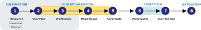
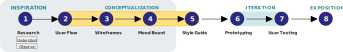

Case Study: AD4X4 LOGBOOK
This is real product for a digital Log-Book App dedicated to Record, Monitor and Up-grade Members of an Off-Road Driving Club.


ROLE
UI/UX Designer
TOOLS USED
- Usability Hub
- Sketch
- InVision
- Photoshop
PROJECT SCALE
3 Months Project.
PRIMARY STAKEHOLDER
CareerFoundry UI Immersion Course
Problem & Challenges
Food products & recipe are a part of culture & personal passions; whether as a reflection to their personal cultural heritage or just personal taste in cuisines.
How can users living in specific communities find “Authentic Mediterranean & Middle Eastern Recipies” designed by professional cooks or passionate community members?
How can we connect people of the same cultural origins that can advise them on how to improvise in case any of the original ingredients are not available in their township,city or state. This can bring the communities of similar background together while having online shopping access to specialty ethnic groceries (that don’t provide shipping services.)

Goal
A Responsive web app. that offers a competitive application & represents a very straightforward intuitive Application, which can easily help users find Mediterranean /Middle-Eastern Recipes with Choices of Kosher, Hallal and Christian Vegan-Fasting Recipes. (Instructional Articles, tutorial Videos and shows.)In addition, Connecting Users with suppliers of Oriental products /Small Groceries & offers through advice or shipping services. - Local where they can see the availability of these products in their area to avoid wasting time on searching.
Noting, marketing will also be extremely important as we’ll need methods for getting our app in front of people and ahead of the competitors.
User Centered Design Process
My process was to take the user goals and branding to inform the potential solutions to provided user stories.Then plan how the product would function via the user flows.These would help define the required interface and interactions in the wireframing and mockup phases as I have followed the “Design Thinking Process” Methodology.

INSPIRATION
1
Research
Research/Inspiration

User reasearch covered competitor analysis to understand how other companies solve the same problem. Studying of Business Requirements, User Personas, User Flows & User stories …etc. Extended research was performed through interviews,user testing to reach the appropriate & practical wireframe designs and inturn the final protoype models.
Aspects of research that have been covered , can be provided upon request & samples are shown on the following slides.
INSPIRATION
1
Research
Competitive Analysis
UI have performed full competitive alanysis below is only a sample of the “SWOT” analysis only done on two websites “Kitchen Stories” & “Forks over Knives”
Kitchen Stories

Knives Over Forks
The product has grown and became more of a large business losing some of its warmth as people have started to complain. Although itseems amazing for most, yet the expansion of the company has gained it some bad reviews (although most reviews are great). Perhaps by focusing on the need of specific groups and more marketing. Returning to the more tailored touch to these groups instead of trying to please all
Strengths
They offer a wide range of impressive options and activities and interactive content (Free Instructional Videos, Step-by–step Instructions, Customizing personal Profiles with option of saving favorite recipes from site or from Web, Creating printable shopping lists in addition to advice and blogs.)
- Amazing Ratings and Awards (Apple Store – rating is 4.8 & Google play - rating is 4.7) Awards (Apple’s Design Awards 2015 - Google Play Award 2016)
- Large investments backing the continuous development of the product.
- Brand name is easy to remember and search.
- Available in multiple languages
Weakness
The product has grown and became more of a large business losing some of its warmth as people have started to complain. Although it seems amazing for most, yet the expansion of the company has gained it some bad reviews (although most reviews are great). Perhaps by focusing on the need of specific groups and more marketing. Returning to the more tailored touch to these groups instead of trying to please all
The company is well marketed across social media, yet I personally have never heard of it before. Although I, as a user was impressed on first visit by the content variety. This basically means that they could have better strategies in marketing their product.
Opportunities
Focusing on the needs of specific groups and more marketing. Bringing back the more tailored touch to these groups instead of trying to please all.
They could have better strategies in marketing their product. A need to focus on certain communities with their own taste, ideology and local markets as food is a part of culture that must be addressed in a more focused strategy..
Threats
Other similar competitors that can threaten their business are products with solid famous networks like BBC Food which is quite popular around the world and is famous for its own TV Network also.
INSPIRATION
1
Research
User Persona
Out of the data, my three personas emerged. Each represented the most popular ideas from my interviews. Designing with personas helped focus the project and make strong connections to the issues I found in my user research.
CONCEPTUALIZATION
2
User Flows
User Flow Diagram

From here I created their paths through the app to each persona's end goal. This was the base for the information architecture of the app..
CONCEPTUALIZATION
2
User Flows
Sitemap Diagram

CONCEPTUALIZATION
3
Wire Frames
User Stories & Low-Fidelity Wireframes

CONCEPTUALIZATION
3
Wire Frames
Low-Fidelity Wireframes
CONCEPTUALIZATION
4
Mood Board
Mood Board
“Evil Eye”

Evil Eye is popular in a lot of the Mediterranean and Middle-Eastern Cultures. It is characterized with its blue And turquoise colors that people in ancient times believed wearing it protects them fom evil or people envying them.
“Olive Branch”

Olives and Olive Bushes are very popular in Mediteranean & Middle-Eastern Cultures.
“Tranquility”

NAME OF APP “EL” means “THE” So the name of the App means “ THE COOK “- Typography- Cinzel Decorative & Public Sans
CONCEPTUALIZATION
5
Style Guide
Style Guide

ITERATION
6
Prototyping
Hi- Fidelity Wireframes

I prepaired final hi-fidelity wireframes in preperation for prototyping
01-Welcome Screen

02C-Onboardind Screens
02B-Log In Screen

02A-Sign Up Screen
03-Home Screen

04A-Filter Screen
04B-Search Screen

05-Personilized Page Screen

06-Detailed Recipe Info Screen

07-Detailed Recipe Ingredredients’ Screen
08-Detailed Recipe Step-by-Step Instruction Screen (horizontal scroll)

09-Grocery List Screen

ITERATION
7
User Testing
Usability Testing

ITERATION
7
User Testing
Results Synthesis & Error Rating
ITERATION
7
User Testing
PROPOSED ADJUSTMENTS